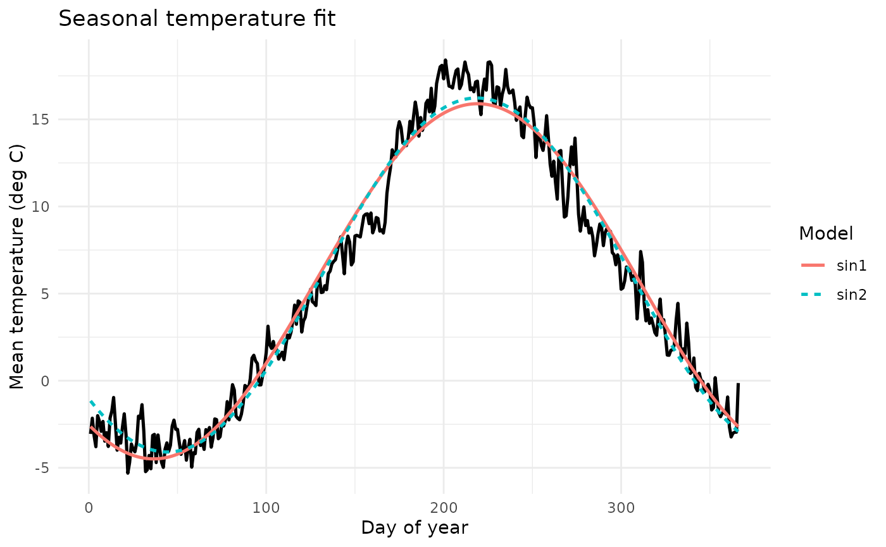
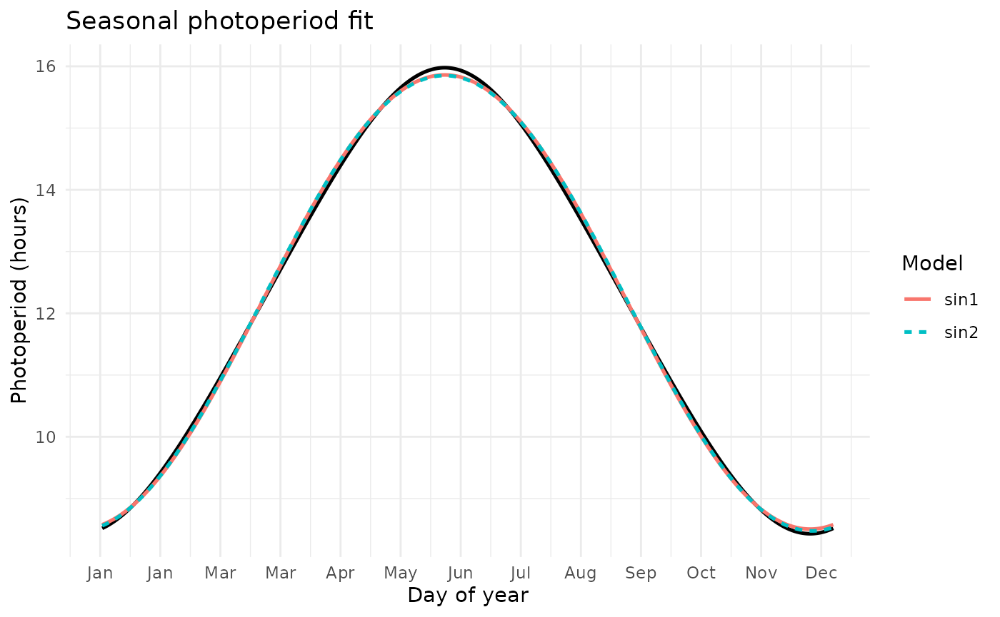

🌤️ Seasonal Climate Fits
Many ecological and epidemiological models benefit from representing climate variables—such as temperature and photoperiod—as smooth periodic functions.
climecol provides two complementary utilities for this purpose:
- fit_seasonal_temp() – fits sinusoidal or user-defined periodic models to mean daily temperature, averaged across years.
- fit_seasonal_photo() – fits similar models to daylength (photoperiod) data, either supplied directly or generated via photoperiod_year().
Both functions:
- Aggregate daily data by day-of-year and compute the mean seasonal cycle.
- Fit one or more parametric periodic functions using nls().
- Return AIC and R² metrics to compare goodness of fit.
- Optionally plot observed versus fitted cycles.
Example 1 — Fitting temperature cycles
res_temp <- fit_seasonal_temp(
weather_nl,
funcs = c("sin1", "sin2"),
plot = TRUE
)
res_temp$metrics
#> # A tibble: 2 × 3
#> model AIC R2
#> <chr> <dbl> <dbl>
#> 1 sin1 1204. 0.971
#> 2 sin2 1159. 0.975
res_temp$plot
Example 2 — Fitting photoperiod cycles
res_photo <- fit_seasonal_photo(
location = "St John's",
years = c(2023, 2024),
funcs = c("sin1", "sin2"),
plot = TRUE
)
res_photo$metrics
#> # A tibble: 2 × 3
#> model AIC R2
#> <chr> <dbl> <dbl>
#> 1 sin1 -934. 0.999
#> 2 sin2 -943. 0.999
res_photo$plot
Example 3 — Supplying a custom periodic model
res_photo_custom <- fit_seasonal_photo(
location = "St John's",
years = c(2023, 2024),
funcs = "sin1",
custom = list(
cos1 = list(
formula = avg_photo ~ a + b * cos(2*pi*day_of_year/365),
start = list(a = 12, b = 6)
)
),
plot = TRUE
)
res_photo_custom$metrics
#> # A tibble: 2 × 3
#> model AIC R2
#> <chr> <dbl> <dbl>
#> 1 sin1 -934. 0.999
#> 2 cos1 495. 0.967| Function | Input data | Built-in models | Custom models | Output |
|---|---|---|---|---|
fit_seasonal_temp() |
Daily mean temperature |
sin1, sin2
|
✓ supported | Seasonal mean curve, AIC, R², optional plot |
fit_seasonal_photo() |
Photoperiod (hours) |
sin1, sin2
|
✓ supported | Seasonal mean curve, AIC, R², optional plot |
Suggested applications
- Representing smooth seasonal forcing in climate-driven mosquito or disease models.
- Comparing interannual variation in fitted parameters.
- Generating climatological “templates” for simulation studies.